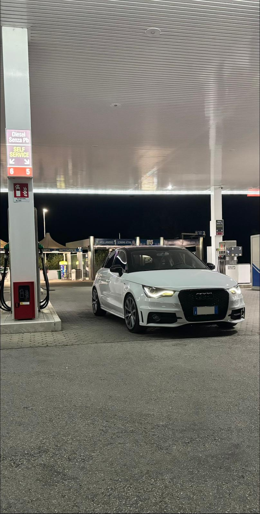

Motori
La passione per le auto è una parte importante dei miei interessi personali.
Mi piace osservare il design delle vetture, l’estetica, i dettagli della carrozzeria
e tutto ciò che riguarda il mondo del tuning. Sono particolarmente interessato
al detailing, alla cura della macchina e alle modifiche estetiche che rendono
un’auto più personale, sportiva e riconoscibile.
Oltre all’aspetto estetico, mi interessa anche la parte meccanica: motori,
prestazioni, assetto, freni e miglioramenti tecnici.